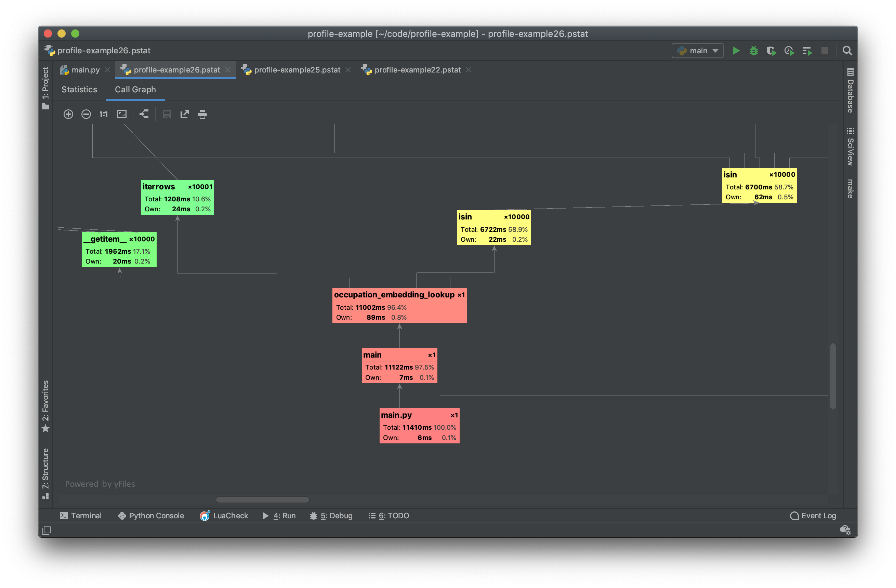

Summary
 Use the standard python cProfile profiler
Use the standard python cProfile profiler
Use PyCharm (Professional Edition) .pstat profile viewer
Ensure entire program can be easily tested for performance
Profiling Tools & Strategy¶
Profiling code is a hugely important part of data science code since machine learning and AI algorithms are typically compute heavy processes. Performance tuning is relevant during both training and prediction time.
During training time, performant code allows developers to have shorter development/training cycles. The difference between a function call that takes 10 seconds vs 1 second has a huge impact on the development experience. An example that many people have likely run into is when loading huge word vector models into memory. A load of GoogleNews W2V using Gensim can take multiple minutes before even being able to do a computation.
During prediction time, performance typically dictates how much a model will cost to host. Performance is often ignored in favor of scaling out horizontally and just paying the cost of hosting. Besides saving on hosting costs, the biggest motivating factor for performance tuning code would be the ability to have a better/faster development experience (just like during training).
Tools¶
There are a variety of profiling tools for python which fall under two different categories:
-
Scope-Based Profilers: These profilers generally use the built-in sys.setprofile or sys.settrace python library calls to track the duration of each stack frame. Every time a function enters a scope, a start time is recorded, and every time the function exits, the end time is recorded. This allows the profiler to record a hierarchical view of where time is spent. These types of profilers may also introduce a lot of overhead since every single scope entrance/exit is tracked. For programs which have many function calls (such as mapping a function over a giant collection) the overhead of a scope-based profiler may give inflated measurements. Another limitation is that many python functions do not generate a stack frame (for example built-in functions). This means that scope-based trackers may not give a granular enough idea of where time is being spent. Scope-based profilers cannot give line-level profiling information.
-
Sampling Profilers: These profilers generally use the built-in sys._getframe python library call to get the current state of the application. In contrast to a scoped-based profiler, sampling profilers only periodically query the running python application to determine where time is being spent. Rather than tracking the duration of a function scope, a sampling profiler tracks the number of times it sees a specific stack frame. This means that a sampling profiler will not track a very accurate measure of the overall method time. A huge benefit of a sampling profiler is that it has the ability to give line-level profile information. It also has almost none of the overhead issues that a scope-based profiler has. Some sampling profilers are even designed to be run on long-running applications for production monitoring.
The most widely used tools are the following:
- cProfile (Scope-Based): The python standard library profiler.
- pprofile (Scope-Based & Sampling): A pure python profiler with optional sampling.
- yappi (Scope-Based & Sampling): A profiler (written in C) with multi-threading support.
- scalene (Sampling): A profiler (written in C++) with built-in memory usage profiling.
In general, it is recommended to start with cProfile and move on to other tools only if there is a need. Almost all use-cases are well-suited to the most basic scoped-based profiler and there are only infrequent times when more specialized profilers should be used. For example yappi may be well suited to testing a multi-threaded web server with extremely high traffic. Though sampling profilers can give extremely granular information, it is unlikely that the issues will not show up clearly in a scope-based profile.
Strategy¶
Warning
To follow along with the tutorial you must have PyCharm Professional
Edition. This tutorial makes extensive use of the .pstat profile viewer
which is not available in the Community Edition
In order to describe the process of profiling code, the following section will
use cProfile and PyCharm to go through the steps of optimizing an unoptimized
function. The example function will compute a categorical embedding. The
function implements mapping an occupation code to an embedding vector. In the
example the occupation code will be a number within the range
(0, n_occupations) and the embedding will have the shape
(n_occupations, n_components).
import pandas as pd
import numpy as np
# ------------------------------------------------------------------------------
# Example Datasets
# ------------------------------------------------------------------------------
n_occupations = 100000 # The number of possible occupation codes
n_components = 100 # The number of components in the occupation embedding
n_samples = 10000 # The number of users
def user_dataframe():
example_values = np.random.randint(0, n_occupations * 2, n_samples)
return pd.DataFrame({
"occupation_code": example_values,
"age": example_values,
"zip_code": example_values,
})
def occupation_code_embedding():
index = np.arange(n_occupations)
np.random.shuffle(index)
values = np.random.random((n_occupations, n_components))
return pd.DataFrame(values, index=index)
# ------------------------------------------------------------------------------
# Example Function Implementation
# ------------------------------------------------------------------------------
def occupation_embedding_lookup(user_df, embedding_df):
result = pd.DataFrame(columns=embedding_df.columns)
for index, row in user_df.iterrows():
value = row["occupation_code"]
# Check if the current occupation code is in the embedding index
if embedding_df.index.isin([value]).any():
# Fetch the embedding for the given occupation code
vector = embedding_df.loc[value]
else:
# Select 0th (default) vector if occupation code is not found
vector = embedding_df.iloc[0]
result.loc[index] = vector
# Concatenate all occupation embeddings for all users
return result
# ------------------------------------------------------------------------------
# Main
# ------------------------------------------------------------------------------
def main():
# Build an example user data and embedding
user_df = user_dataframe()
embedding_df = occupation_code_embedding()
# Compute the embedding from the user feature
result = occupation_embedding_lookup(user_df, embedding_df)
if __name__ == '__main__':
main()
In the above example, the occupation_embedding_lookup will be the focus of
the profile. The user_dataframe and occupation_code_embedding functions
will show up in future profiles but should be ignored since they are only used
to generate example datasets.
Question
To demonstrate the importance of profiling, briefly look at the
occupation_embedding_lookup function and come up with an guess for which
lines will have the worst performance problems.
What do you think will be the most time-consuming part of the function?
How long do you think it will take the function to run?
In pycharm, open the project, and file and then right click the within the
editor panel. From the dropdown menu, select the Profile '<your_file>' option.
This will invoke cProfile on the file.

When the profile is complete, the PyCharm .pstat viewer will open the
resulting profile. The results of any profiler that is capable of generating a
.pstat file can be viewed in PyCharm (even if the profile was not generated
within PyCharm).

On this .pstat viewer panel, the Statistics tab is selected by default.
Each row corresponds to a stack frame and its corresponding run time. This
view can be useful, but it is hard to see exactly where bottleneck originated
from. Notice that the most time consuming call is numpy.concatenate which is
never directly called in the code example above. This usually indicates that
this call is embedded in a library call.
The get a more informative view of the problem areas in the call-stack, select
the Call Graph tab (outlined in red above).

This view presents a much more direct representation of what takes the most time. When the call graph is first presented, it may be too small to read the individual nodes. The zoom can be used by pressing the buttons on the top left of the panel (highlighted in red above).
Each node in the PyCharm .pstat viewer represents a different stack frame.
PyCharm color codes these stack frames from most time-consuming (red) to least
time-consuming (green).
Each stack frame tracks 3 things:
- Total time spent within the frame and all sub-frames (
Total) - Total time spent within the frame but not within a sub-frame (
Own) - Total number of times the frame was entered (
x<number>in the top right)
This is the information that should be used to guide where to optimize the code. The first areas of focus should be the red boxes. The bottom 3 stack frames are composed of:
main.py- The overall execution of the file. TheTotalwill always equal the execution time of the program. In the example profile, the program took 65.8 seconds to execute.main- This is thedef main()function defined to drive the program.occupation_embedding_lookup- This is the function that performs the embedding. In this view it becomes clear that the embedding computation takes up nearly all of the execution time (99%). The remaining execution time is spent in the initialization of data.
None of this is very helpful since it is known that very little computation is
occuring outside of the embedding function. The next most time consuming
portion of the code is the __setitem__ call. Just from looking at the name, it
is not clear where this is occuring. PyCharm can directly show the source code
of the problem by right clicking on the node and selecting the "Navigate To
Source" option (highlighted in red above).
Upon inspecting the source code it becomes clear that this call is the
DataFrame.__setitem__ method. Further inspection of the profile call graph
chart reveals that this method calls into DataFrame.append which then calls
into numpy.concatenate (The most time consuming individual function).
There is only one place in the code where a DataFrame set item occurs in
the occupation_embedding_lookup function:
def occupation_embedding_lookup(user_df, embedding_df):
result = pd.DataFrame(columns=embedding_df.columns)
for index, row in user_df.iterrows():
value = row["occupation_code"]
if embedding_df.index.isin([value]).any():
vector = embedding_df.loc[value]
else:
vector = embedding_df.iloc[0]
result.loc[index] = vector
return result
From the profile it becomes clear that every call to
result.loc[index] = vector causes an array concatenation to be performed. This
means that a completely new array is allocated every time this line is
executed.
To alleviate the issue, modify the function to collect the results in a structure designed for concatenation. A python list is a good candidate for this since it is tuned to handle appending.
def occupation_embedding_lookup(user_df, embedding_df):
result = list()
for index, row in user_df.iterrows():
value = row["occupation_code"]
if embedding_df.index.isin([value]).any():
vector = embedding_df.loc[value]
else:
vector = embedding_df.iloc[0]
result.append(vector)
return pd.DataFrame(result, index=user_df.index, columns=embedding_df.columns)
Run the profile on the updated function to view the results.

The first thing to note is that the overall runtime has been drastically reduced. The original profile of 65.8 seconds has been reduced to 11.4 seconds.
The new profile now shows that the next most time consuming part of the function is the check to see if the value is in the index.
def occupation_embedding_lookup(user_df, embedding_df):
result = list()
for index, row in user_df.iterrows():
value = row["occupation_code"]
if embedding_df.index.isin([value]).any():
vector = embedding_df.loc[value]
else:
vector = embedding_df.iloc[0]
result.append(vector)
return pd.DataFrame(result, index=user_df.index, columns=embedding_df.columns)
The line embedding_df.index.isin([value]).any() ends up checking to see if
each of the index values match the current occupation code. Rather than an
O(1) hash lookup, this performs an 0(n) search on the embedding index for
every single row in the user_df. This can be alleviated by simplifying the
logic and using the in operator on the pd.Index object.
def occupation_embedding_lookup(user_df, embedding_df):
result = list()
for index, row in user_df.iterrows():
value = row["occupation_code"]
if value in embedding_df.index:
vector = embedding_df.loc[value]
else:
vector = embedding_df.iloc[0]
result.append(vector)
return pd.DataFrame(result, index=user_df.index, columns=embedding_df.columns)
Run the profile on the updated function to view the results.

The final profile now shows that the overall execution time is 4.1 seconds. This is a 16x speedup from the original profile!
Even though there may still be performance issues with this function, the code is already much more optimized than it was with just a few minor tweaks.
Challenge
Continue to profile the code and see if you can get a 1000x speedup!